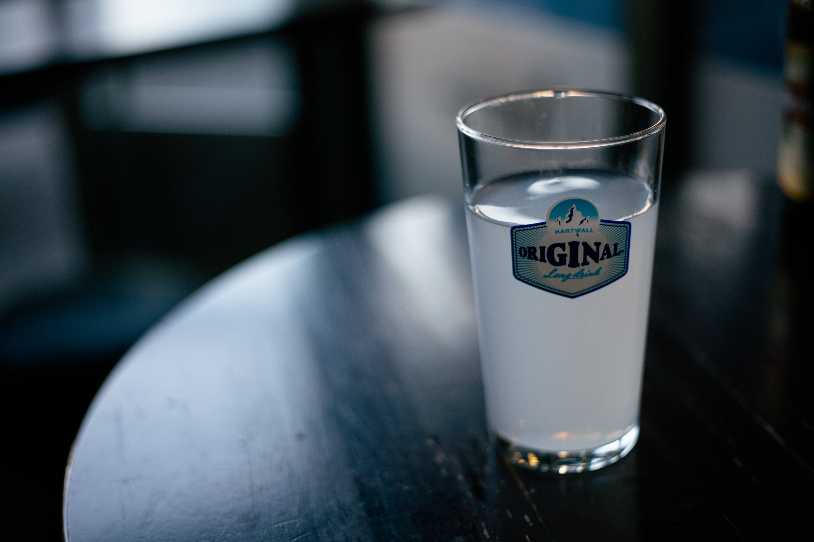

A genuine tentacle, Hartwall Original Long Drink is a fresh blend of Finnish handmade gin and sour grapefruit. The beverage was launched at the Helsinki Olympics in 1952 and has been fascinating the taste buds of the Finns ever since. Today, Original Long Drink, with its shades of gray and stripes, has gained an iconic position in Finnish drinking culture.Hartwall Original Long Drink Grapefruit is the original genuine tentacle that originated from the 1952 Helsinki Olympics. It is still made from an original 1952 recipe made from handmade Finnish gin and grapefruit. At best, ice cold.
